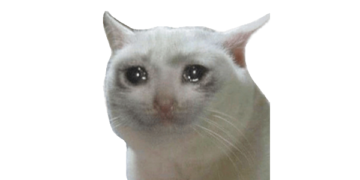
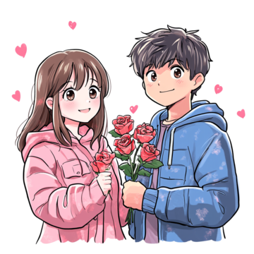
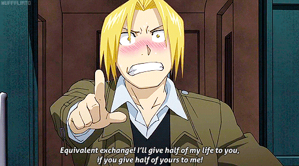
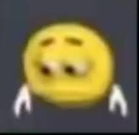

La verdad, me costó bastante hacer esta página, pero siento que valía la pena intentarlo.
Hay algo que quiero decirte desde hace mucho tiempo, pero no sabia cómo…
Así que decidí hacerlo de esta forma.
(La verdad, no creo que me anime a decírtelo en persona... jaja, perdón 😅).
Ojalá te guste, porque le puse muchas ganas (y nervios jaja).
¿Seguimos?
No quieres continuar?
Como que no pero si me esforce para que quede bonito para vos.

Aún puedes decidir avanzar si quieres.
Estoy muy enamorado de vos.
Realmente no sabés lo mucho que te aprecio.
Desde que te conocí, no puedo dejar de pensar en vos...
(y la verdad, tampoco quiero dejar de hacerlo).
Sos la persona más maravillosa y hermosa que conozco.
Y no hablo solo de lo físico —que obviamente también—
sino que todo en vos me parece perfecto…
A veces siento que sos demasiado perfecta para alguien como yo.
Te voy a ser honesto
me gustás… y me gustás mucho.
Me gustás por tantas razones que podría escribirte un libro.
Pero como no quiero cansarte (todavía jaja),
acá voy a tratar de contarte al menos algunas de esas razones..

¿Querés saber por qué me gustás tanto?
Entonces sigamos 💌
Bueno empecemos jsjsj
Me encantan tus ojos.
Me encanta tu sonrisa… tan hermosa.
También me encanta tu mirada, y cómo me mirás.
Tu forma de ser me fascina.
Me encantan tus manos… porque encajan perfecto con las mías.
Amo el sonido de tu voz.
Me encanta lo directa y honesta que sos,
porque yo a veces soy medio tonto y no entiendo las cosas rápido…
Tenés unos gustos maravillosos,
y me encanta que los hayas compartido conmigo.
(Ahora pienso en vos cada vez que los veo, jaja.)
Me encanta que me mandes tus fotos.
Me encanta hablar con vos
Con solo un mensaje tuyo,
ya me alegrás el día entero.
Me gusta estar con vos.
Y la verdad…
me gusta todo de vos.
Podría seguir, pero sería demasiado largo, jaja.
Aunque creo que ya sabés a dónde quiero llegar…
Pero antes, hay algo que tenés que saber:
Para mí, vos sos la más perfecta.
Nadie está ni va a estar a tu nivel.
(La verdad, no hay punto de comparación.)
Bueno... una última cosa antes de pasar a lo siguiente.
También me gustas porque nunca me juzgaste, porque siempre fuiste honesta conmigo.
Me das esa seguridad que siempre estuve buscando, y haces que mi cabeza —por fin— se calme.
La verdad... no sé cómo terminé tan enamorado de vos, pero lo único que sé es que jamás me arrepentiré de haberme acercado a vos en ese bar.
Conocerte fue lo más maravilloso que me pudo pasar.
Todavía recuerdo ese día… estabas tan hermosa (como todos los días) y yo estaba tan nervioso, jajaj.
El recuerdo de ese día, y todo lo que sentí, siempre lo voy a guardar con cariño.
(pdt:Esta es mi foto favorita de nosotros y me gustaria tener mas fotos juntos :) )
Bueno… eso era lo último que quería decirte con el corazón en la mano.
Pero antes de ponerme más cursi, vamos a cambiar un poquito el tono…
Ventajas de estar conmigo
La verdad… no hay ninguna ventaja jsjsjs.
No soy perfecto, ni tengo grandes cosas para presumir.
Pero te prometo que voy a hacer todo lo posible para que seas feliz.
Entregaría todo de mí por vos.
Hay una razón por la que hice esta página.
Hay algo que quiero decirte…
y la verdad, no soy muy bueno con las palabras (creo que ya te diste cuenta de eso 😅).
Así que se me ocurrió decírtelo a mi manera.
Esta es.
¿Querés saber cuál es el propósito de todo esto?
Equivalencia de intercambio
Te doy la mitad de mi vida si tu me das la mitad de la tuya

Dicen que, para conseguir algo importante, uno tiene que dar algo del mismo valor.
(Es una frase que escuché en una serie… y se me quedó grabada).
Yo no tengo mucho para ofrecer.
Pero lo poco que tengo —mi tiempo, mis ganas, mi cariño—
te los daría sin pensarlo.
Porque me gustás.
Cariño, sos tan brillante…
Sos como el sol: a veces brillás tanto que siento que no puedo mirarte.
Pero aún así, lo único que quiero… es quedarme con vos.
Quiero ser la única persona que brille contigo.
Me gustás por cómo sos, por cómo me hacés sentir…
y por todo eso que ya te dije antes (y un poco más también).
Así que si estás dispuesta,
me encantaría intentarlo con vos.
¿Querés ser mi novia?
(pdt:Tengo un regalo para vos si decis que si ;) )
Me haces muy feliz
Tal vez esperabas una confesión más grande, con un regalo espectacular o un gran gesto romántico.
Pero esto… esta es mi forma de hacerlo.
Te hice este pequeño espacio en la red.
Un rincón que cualquiera podría ver, pero que solo vos vas a entender.
Quiero que sepas que esto es solo el comienzo.
Me encantaría seguir haciéndote cosas lindas: juegos, más páginas, lo que se me ocurra…
todo para sacarte una sonrisa.
No tengo mucho para ofrecer, lo sé.
Pero voy a esforzarme cada día para darte lo que querés.
Para que seas feliz.
Desde ahora —si me lo permitís— soy completamente tuyo.
“Te daré mi futuro. También mi corazón, mi cuerpo, mi tiempo y todo mi ser.”
Estaré junto a vos siempre.
Te lo prometo.
No sé qué va a traer el futuro.
Pero lo que sí sé… es que quiero vivirlo con vos.
Todo lo que venga, lo vamos a enfrentar juntos.
Y yo voy a estar ahí, siempre, en las buenas y en las malas.
Gracias por elegirme.
Yo también te elijo, todos los días
No sé en qué momento pasó, pero… me di cuenta de que ya no es solo un ‘te quiero’ lo que siento por vos.
Te amo. De verdad.
Bueno… no era lo que esperaba jajaja
La verdad no estaba muy seguro de que ibas a aceptar…
y tal vez me apuré un poco jsjsjs.

No te quiero presionar ni hacerte sentir incómoda.
Pero al menos ahora sabés lo que siento por vos.
(pdt: Igual te voy a dar el regalo, ajajaja😌)
Que me hayas rechazado no significa que me vaya a rendir.
Voy a seguir esforzándome, creciendo, aprendiendo…
Porque quiero estar a tu altura.
Y sí… voy a volver a intentarlo en el futuro.
Con una página aún mejor, con más cosas lindas.
Después de todo… todavía tengo ese objetivo en la cabeza:
**Voy a hacer que te cases conmigo algún día.** 😳💍
Así que por ahora, gracias por haber llegado hasta acá.
Y por haber sido parte de este pequeño (gran) intento de decirte lo que siento.
Y si cambias de opinion ya sabes que estoy aqui esperando por ti jsjsj.
Gracias por llegar hasta el final 💖
Ya sea que hayas dicho que sí o que no…
gracias por tomarte el tiempo de leer todo esto.
Significa muchísimo para mí.
Hice esta página con mucho cariño, con nervios y con el corazón abierto.
Porque vos lo valés. Siempre lo valiste.
Pase lo que pase… nunca voy a olvidar este momento.
Gracias por existir y por ser parte de algo tan especial para mí. 🫶
(pdt:Tenia planeado mostrate esto en persona para escuchar tu respuesta
pero si no se puede necesito que me lo digas, por que no puedo ver lo que vas a elegir jsjsjs)